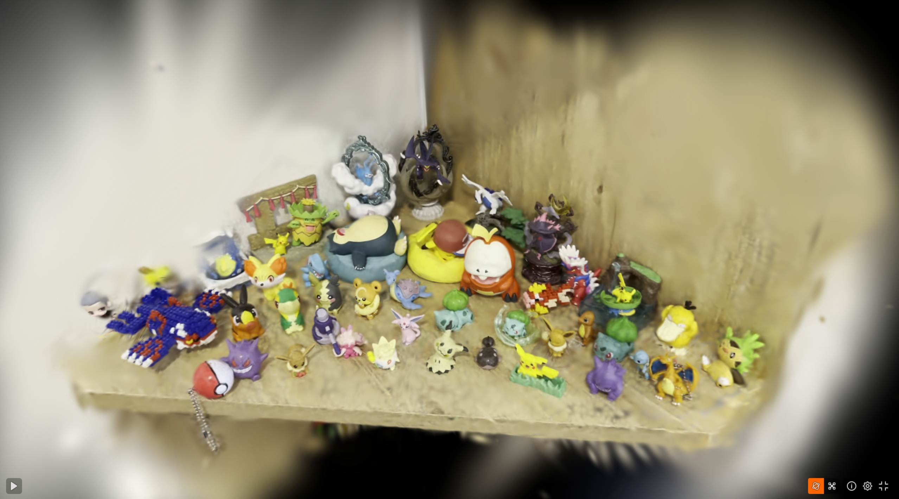
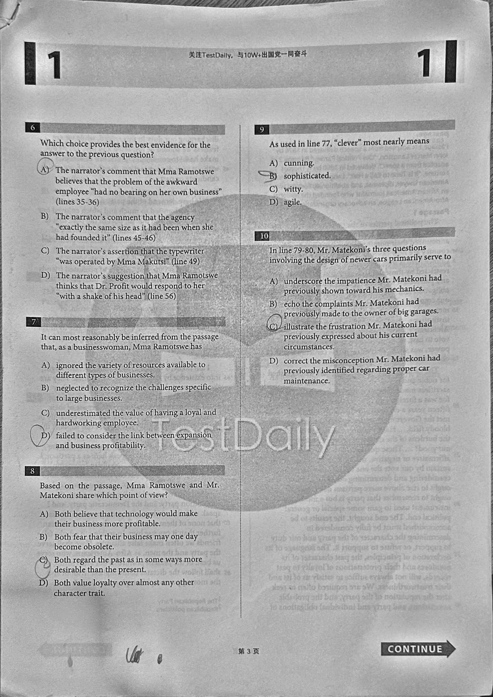
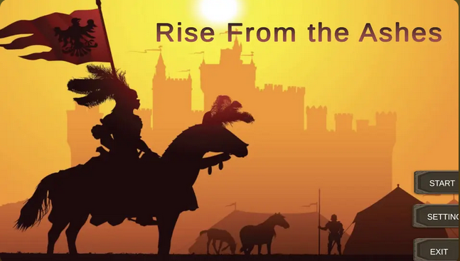
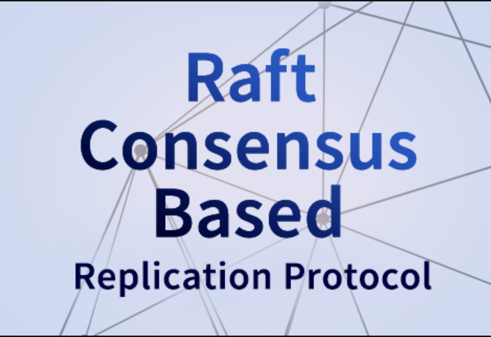

Master Student @ Brown University
Computer Vision · Software · Cloud
I’m pursuing the Master’s degree at Brown University. My recent interests are in computer vision, computer graphics, and machine learning. I enjoy building systems that connect algorithms with real-world visual data, like image processing and 3D reconstruction
I’m currently exploring computer vision and visual computing, while building projects to deepen my understanding of the underlying mathematics and engineering. I’m particularly interested in 3D reconstruction, novel-view synthesis, and learning-based approaches to visual computing.


Built a web-based document scanner that detects document boundaries, performs perspective correction, and applies image enhancement to produce clean scanned documents.
Python · Image Processing · Geometric Transformation · OpenCV
Rendered a 3D splat of my pokemon collection using 3DGS from a 1-minute video processed by Colmap into a point map
Python · Image Processing · Geometric Transformation · OpenCV
Built a distributed key-value store in Python, implementing a simplified Raft consensus protocol for leader election and log replication. Replicas communicate over UDP with JSON-encoded messages and are exercised by a custom simulator that injects network drops, partitions, and replica crashes to validate correctness under faults.
Python · Raft · UDP NetworkingMy main responsibilities involve writing automation test scripts, maintaining Jenkins pipelines and test suites with documentation.
Python · QA · TestCompleteI was a part of CS1800 Discrete Structure course teaching assistant staff for 3 semesters at Northeastern University.
My main responsibilities involve holding weekly Office Hours, providing 1-1 mentor session for students and developing supplementary materials for class.
Discrete Math · TA